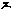

大正新脩大藏經 第18冊
No.854 胎藏梵字真言 (2卷)
【失譯】
第 2 卷
胎藏梵字真言下卷
力三昧。
na maḥ sa ma nta bu ddhā nāṃ a sa me tri sa me sa ma ye svā hā
法界生。
na maḥ sa ma nta bu ddhā nāṃ dha rma dha tu sva bha va ko haṃ
法輪。
na maḥ sa ma nta va jra ṇaṃ va jra tma ko haṃ
大惠刀。
na maḥ sa ma nta bu ddhā nāṃ ma hā kha dbha bi ra ja dha rma saṃ da rśa ka sa ha ja sa tkā ya da ṣṭi cche da ka ta thā ga tā bi mu kti ni rja ta bi rā ga dha rma ni rja ta hūṃ
法螺。
na maḥ sa ma nta bu ddhā nāṃ aṃ
蓮花。
na maḥ sa ma nta bu ddhā nāṃ aḥ
金剛大惠。
na maḥ sa ma nta va jra ṇaṃ hūṃ
如來頂。
na maḥ sa ma nta bu ddhā nāṃ hūṃ hūṃ
毫相。
na maḥ sa ma nta bu ddhā nāṃ aḥ haṃ jaḥ
大鉢。
na maḥ sa ma nta bu ddhā nāṃ bhaḥ
施無畏。
na maḥ sa ma nta bu ddhā nāṃ sa rva thā ji na ji na bha ya nā śa na svā hā
與願。
na maḥ sa ma nta bu ddhā nāṃ va ra da va jra tma ka svā hā
怖魔。
na maḥ sa ma nta bu ddhā nāṃ ma hā va mi va ti da śa va lo dbha ve ma hā me trya bhya dga ta svā hā
悲生願。
na maḥ sa ma nta bu ddhā nāṃ ga ga na va ta la kṣa ṇa ka ru ḍo ma ya ta thā ga ta ca kṣuḥ svā hā
索。
na maḥ sa ma nta bu ddhā nāṃ he he ma hā pā śa pra sa rau dā rya sa tva dha tu bi mo ha ka ta thā ga tā dhi mu kti ni rja ta svā hā
鉤。
na maḥ sa ma nta bu ddhā nāṃ aḥ sa rva trā pra ti ha te ta thā ga tā ku śā bo dhi ca rya pa ri pū ra ka svā hā
如來心。
na maḥ sa ma nta bu ddhā nāṃ jñā no dbha va svā hā
臍。
na maḥ sa ma nta bu ddhā nāṃ a mṛ to dbha va svā hā
腰。
na maḥ sa ma nta bu ddhā nāṃ ta thā ga tā saṃ bha va svā hā
藏。
na maḥ sa rva ta thā ga te bhyaḥ raṃ raṃ raḥ raḥ svā hā
大結界。
na maḥ sa ma nta bu ddhā nāṃ le bu pu ri bi ku ri bi ku ri svā hā
無堪忍大護。
na maḥ sa rva ta thā ga te bhyaḥ sa rva bha ya bi ga te bhyaḥ bi śva mu khe bhyaḥ sa rva □ra kṣa maṃ hā va le sa rva ta thā ga tā pu rye ni rja te hūṃ hūṃ tra ṭ a pra ti ha te svā hā
普光。
na maḥ sa ma nta bu ddhā nāṃ jvā lā ma li ni ta thā ga tā rcṇi svā hā
如來甲。
na maḥ sa ma nta bu ddhā nāṃ pra ca ṇḍa va jra jvā la bi sphu ra hūṃ
如來舌。
na maḥ sa ma nta bu ddhā nāṃ ta thā ga tā ji hva sa tya dha rma pra ti ṣṭi ta svā hā
如來語。
ta thā ga ta va ktra na maḥ sa ma nta bu ddhā nāṃ ta thā ga tā ma hā va ktra bi śva ja na ma ho da ya svā hā
如來牙。
na maḥ sa ma nta bu ddhā nāṃ ta thā ga tā daṃ ṣṭra ra sā gra saṃ prā pa ka sa rva ta thā ga tā bi ṣa ya saṃ bha va svā hā
如來辯說。
pra ti saṃ bi mu dra na maḥ sa ma nta bu ddhā nāṃ a ci ntya dbhu ta rū pa va ksa sa ma nta pra pta bi śu ddhā sva ra svā hā
如來十力。
na maḥ sa ma nta bu ddhā nāṃ da śa va loṃ ga dha ra hūṃ saṃ jaṃ svā hā
如來念處。
smṛ tyu pa sva na na maḥ sa ma nta bu ddhā nāṃ ta thā ga ta smṛ ti sa tva hi tvā bhya dga ti ga ga na sa mā sa ma svā hā
平等開悟。
sa ma ntā bo dhī ni na maḥ sa ma nta bu ddhā nāṃ sa rva dha rma sa ma ntā prā pta ta thā ga to nu ga ta svā hā
如來昧。
na maḥ sa ma nta bu ddhā nāṃ sa ma ntā nu ga ta bi ra ja dha rma ni rja ta ma hā ma hā svā hā
慈氏菩薩。
na maḥ sa ma nta bu ddhā nāṃ a ji taṃ ja ya sa rva sa tvā śa ya nu ga ta svā hā
虛空藏。
na maḥ sa ma nta bu ddhā nāṃ ā kā śa sa ma tā nu ga ta bi ci trāṃ va ra dha ra svā hā
除蓋障。
na maḥ sa ma nta bu ddhā nāṃ āḥ sa rva hi tā bhyu dga ta traṃ traṃ raṃ raṃ svā hā
觀自在。
na maḥ sa ma nta bu ddhā nāṃ sa rva ta thā ga tā va lo ki ta ka ru ṇa ma ya ra ra ra hūṃ jaḥ svā hā
得大勢至。
na maḥ sa ma nta bu ddhā nāṃ jaṃ jaṃ saḥ svā hā
多羅菩薩。
na maḥ sa ma nta bu ddhā nāṃ tā re tā ri ṇi ka ru ṇe dbha ve svā hā
毘俱胝。
na maḥ sa ma nta bu ddhā nāṃ sa rva bha ya trā sa ni hūṃ spha ṭ ya svā hā
白處尊。
na maḥ sa ma nta bu ddhā nāṃ ta thā ga ta bi ṣa ya sa bha ve pa dma mā li ni svā hā
何耶[(薩-文+(立-一))/木]哩婆。
na maḥ sa ma nta bu ddhā nāṃ hūṃ kha da ya ḍhaṃ ja spha ṭ ya svā hā
地藏菩薩。
na maḥ sa ma nta bu ddhā nāṃ ha ha ha su ta nu svā hā
曼珠室哩。
na maḥ sa ma nta bu ddhā nāṃ he he ku mā ra ka bi mu kti pa thā svi ta sma ra sma ra pra ti jñāṃ svā hā
光網菩薩。
na maḥ sa ma nta bu ddhā nāṃ he he ku mā ra mā ya ga ta sva hā bhā va svi ta svā hā
無垢光。
na maḥ sa ma nta bu ddhā nāṃ hā ku mā ra bi ci tra ga ti ku mā ra ma nu sma ra svā hā
計設尼。
na maḥ sa ma nta bu ddhā nāṃ he he ku mā ri ke da yā jñā nāṃ sma ra pra ti jñā svā hā
烏波計始儞。
na maḥ sa ma nta bu ddhā nāṃ bhi nda ya jñā naṃ he ku mā ri ke svā hā
地惠幢。
va su ma tyā na maḥ sa ma nta bu ddhā nāṃ he sma ra jñā na ka tu svā hā
請召童子。
a ka rṣa ye na maḥ sa ma nta bu ddhā nāṃ a ka rṣa ya sa rva ku ru ā jñā ku mā □sya svā hā
不思議童子。
na maḥ sa ma nta bu ddhā nāṃ ā □ya nī ye svā hā
大愛樂亦名除疑怪。
ko ku ha li na maḥ sa ma nta bu ddhā nāṃ bi ma ti cche da ka svā hā
施無畏。
na maḥ sa ma nta bu ddhā nāṃ ā bha ya da da svā hā
除惡趣。
na maḥ sa ma nta bu ddhā nāṃ a bhyu ddha ra ṇi sa tvā dhā tuṃ svā hā
救護惠。
na maḥ sa ma nta bu ddhā nāṃ he ma hā ma ha sma ra pra ti jñāṃ svā hā
大慈生。
na maḥ sa ma nta bu ddhā nāṃ sva ce to dga ta svā hā
悲施潤。
na maḥ sa ma nta bu ddhā nāṃ ka ru ṇḍe mre ḍi ta svā hā
除一切熱惱。
na maḥ sa ma nta bu ddhā nāṃ he va ra da va ra prā pta svā hā
不思議惠。
na maḥ sa ma nta bu ddhā nāṃ sa rvā śā pa ri pū ra ka svā hā
地藏旗。
na maḥ sa ma nta bu ddhā nāṃ ha ha ha bi sma yo svā hā
寶處。
na maḥ sa ma nta bu ddhā nāṃ he ma hā ma ha svā hā
寶手。
na maḥ sa ma nta bu ddhā nāṃ ra ḍo □svā hā
持地。
na maḥ sa ma nta bu ddhā nāṃ dha ra ṇiṃ dha ra svā hā
寶印手。
na ra sa ma nta bu ddhā nāṃ ra tna ni ji ta svā hā
堅固意。
na maḥ sa ma nta bu ddhā nāṃ va jra saṃ bha va svā hā
虛空無垢。
na maḥ sa ma nta bu ddhā nāṃ ga ga nā nta go ca ra svā hā
虛空惠。
na maḥ sa ma nta bu ddhā nāṃ ca kra va rtti svā hā
蓮花印。
ku va la ya svā hā mu drā pū rva tkiṃ ci di ṣa dvi ka si ta
清淨惠。
na maḥ sa ma nta bu ddhā nāṃ dha rma saṃ bha va svā hā
行惠。
na maḥ sa ma nta bu ddhā nāṃ pa dma la ya svā hā
同前。
va jra sli ra bu ddheḥ pū rva va tma tra
金剛手。
na maḥ sa ma nta bu ddhā nāṃ va jra ka ra svā hā
執金剛。
na maḥ sa ma nta va jra ṇaṃ ca ṇḍa □hā ro ṣa □□
金剛拳。
na maḥ sa ma nta va jra ṇa spho ṭa ya va jra saṃ bha ve svā hā
無能勝。
na maḥ sa ma nta va jra ṇaṃ du rva rṣa ma hā ro ṣa ṇa kha da ya sa rvāṃ sta thā ga rā jñāṃ ku ru svā hā
阿毘目佉。
na maḥ sa ma nta va jra ṇaṃ he a bhi mu kha ma hā pra ca ṇḍa kha da ya kiṃ ca ra ya si sa ma ya ma nu sma ra svā hā
釋迦牟尼鉢。
na maḥ sa ma nta bu ddhā nāṃ sa rva klo śa ni sū da na sa rva dha rma va śi rā prā pta ga ga na sa mā sa ma svā hā
一切佛頂。
na maḥ sa ma nta bu ddho nāṃ vaṃ vaṃ hūṃ hūṃ hūṃ pha ṭ svā hā
阿修羅。
na maḥ sa ma nta bu ddhā nāṃ ga ra la yaṃ svā hā
乾闥婆。
na maḥ sa ma nta bu ddhā nāṃ bi śu ddhā svā ra ra va hi ni svā hā
藥叉。
ya kṣa na maḥ sa ma nta ba ddhā nāṃ ya kṣe śva ra svā hā
藥叉女。
ya kṣi ṇī ya kṣa bi dyā dha ri svā hā
毘舍遮。
bi śā cā nāṃ na maḥ sa ma nta bu ddhā nāṃ pi śā ca ga ni svā hā
毘舍[這-言+支]。
pi śā cī na maḥ sa ma nta bu ddhā nāṃ pi ci pi ci svā hā
一切執曜。
sa rva gra ha na maḥ sa ma nta bu ddhā nāṃ gra hai śva rya
一切宿命。
sa rva ma kṣa trā na maḥ sa ma nta bu ddhā nāṃ ma kṣa tra ni rjya da nī ye svā hā
諸羅剎娑。
na maḥ sa ma nta bu ddhā nāṃ rā kṣa sā dhi pa ra ye svā hā
諸荼吉尼。
nū ki nī na maḥ sa ma nta bu ddhā nāṃ hrī haḥ svā hā
字輪 第五卷。
na maḥ sa ma nta bu ddhā nāṃ a
na maḥ sa ma nta bu ddhā nāṃ sa
na maḥ sa ma nta va jra ṇaṃ va
ka kha ga gha ca ccha ja rū
ṭa ṭha nu ḍha ta thā da dha
pa pha ba bha ya ra la va
śa ṣa sa ha kṣa
短呼皆上聲此一轉。
na maḥ sa ma nta bu ddhā nāṃ ā
na maḥ sa ma nta bu ddhā nāṃ sā
na maḥ sa ma nta va jra ṇaṃ vā
ka kha ga gha ca ccha ja jha
ṭa ṭha nu ḍha ta thā da dha
pa pha ba bha ya ra la va
śa ṣa sa ha kṣa
長呼也此去聲右此一轉。
na maḥ sa ma nta bu ddhā nāṃ aṃ
na maḥ sa ma nta bu ddhā nāṃ saṃ
na maḥ sa ma nta bu ddhā nāṃ vaṃ
kaṃ khaṃ gaṃ ghaṃ caṃ cchaṃ jaṃ jhaṃ
ṭaṃ ṭhaṃ nuṃ phaṃ taṃ thaṃ daṃ dhaṃ
paṃ phaṃ baṃ ḍhaṃ yaṃ raṃ laṃ vaṃ
śaṃ ṣya saṃ haṃ kṣaṃ
第一轉皆帶右此一轉。
na maḥ sa ma nta bu ddhā nāṃ aḥ
na maḥ sa ma nta bu ddhā nāṃ saḥ
na maḥ sa ma nta va jra ṇaṃ vaḥ
kaḥ khaḥ gaḥ ghaḥ caḥ cchaḥ jaḥ jhaḥ
ṭaḥ ṭhaḥ ḍaḥ bhaḥ taḥ thaḥ daḥ dhaḥ
paḥ phaḥ baḥ bhaḥ yaḥ raḥ laḥ vaḥ
śaḥ ṣaḥ saḥ haḥ kṣaḥ
聲呼皆入右一轉。
ī i u ū e ai o au
ṭa jhe ṇa na ma ṭā ñā ṇā nā mā
ṅaṃ jhe ṇaṃ naṃ maṃ ṭaḥ ñaḥ ṇaḥ naḥ maḥ
大真言王。
na maḥ sa ma nta bu ddhā nāṃ a sa mā pta dha rma dhā tu
ga tiṃ ga tā nāṃ sa rva thā
āṃ khaṃ aṃ aḥ
saṃ saḥ haṃ haḥ raṃ raḥ vaṃ vaḥ svā hā
hūṃ raṃ raḥ hra haḥ svā hā raṃ raḥ svā hā
□□□生。
na maḥ sa ma nta bu ddhā nāṃ raṃ raḥ svā hā
金剛不壞。
na maḥ sa ma nta bu ddhā nāṃ vaṃ vaḥ svā hā
蓮花藏。
na maḥ sa ma nta bu ddhā nāṃ saṃ saḥ svā hā
萬德莊嚴。
na maḥ sa ma nta bu ddhā nāṃ haṃ haḥ svā hā
一切支分生。
na maḥ sa ma nta bu ddhā nāṃ aṃ aḥ svā hā
世尊陀羅尼。
na maḥ sa ma nta bu ddhā nāṃ bu ddhā dhā ra ṇi dhā ra ya sa rvaṃ bha ga va ti ā kā ra va ti sa ma ye svā hā
法住真言。
na maḥ sa na nta bu ddhā nāṃ āḥ ve da vi de svā hā
迅疾持真言。
na maḥ sa ma nta bu ddhā nāṃ ma hā yo ga yo gi ni yo ge śva ri khaṃ ja rī ke svā hā
百光通照 下第六卷。
na maḥ sa ma nta bu ddhā nāṃ aṃ
加持句真言。
na maḥ sa ma nta bu ddhā nāṃ sa rva thā śiṃ śiṃ traṃ traṃ guṃ guṃ dha raṃ dha raṃ sphā pa ya sphā pa ya bu ddhā sa tya va dha rma sa tya vā ksaṃ gha sa tya ka vā svā ka vā hūṃ hūṃ □da bi de svā hā ṭha sa mā pta ṭha